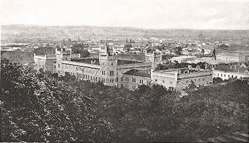
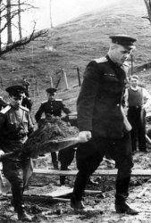
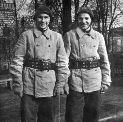
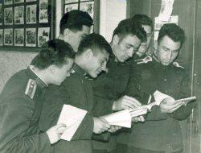
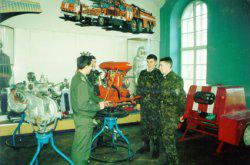
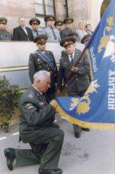
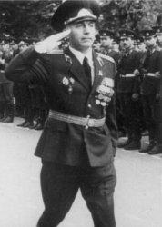
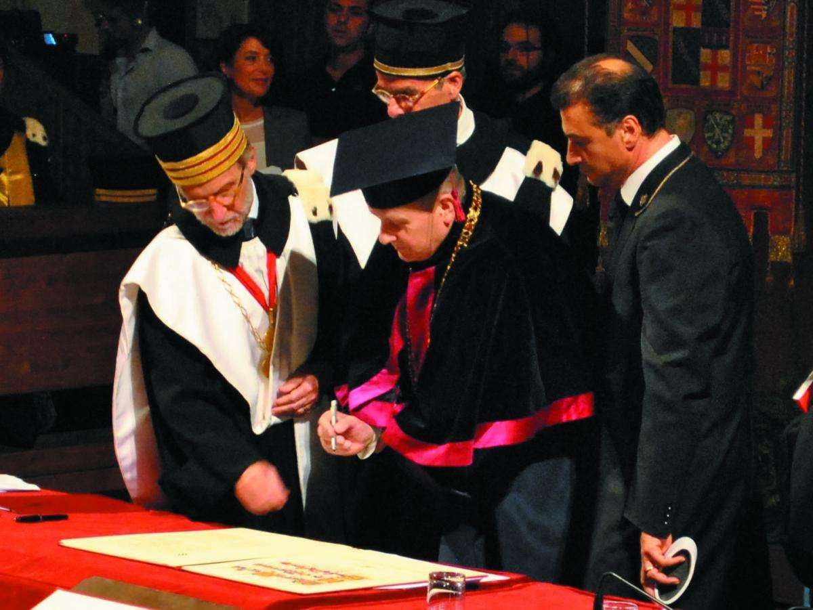
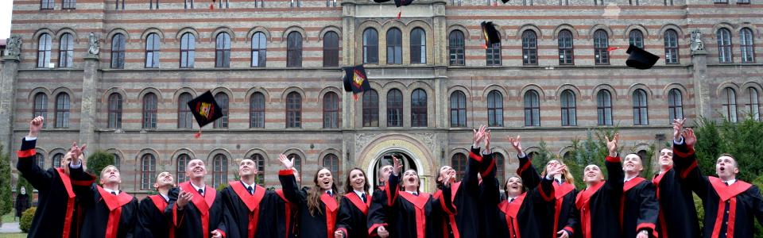

Львівський державний університет безпеки життєдіяльності розпочав свою історію з невеликого навчального закладу - Київських курсів удосконалення офіцерського складу пожежної охорони МВС СРСР. Поповнення кадрів пожежної охорони в післявоєнний час здійснювалось в основному з числа солдатів і офіцерів, які повернулись із фронту.

З метою підвищення їх професійного рівня в країні було організовано ряд курсів перепідготовки. Зокрема, такі курси створені в жовтні 1947 року в м. Києві на базі першої сержантської школи УПО УМВС Київської області з терміном навчання 10 місяців (профілактики) і 15 місяців (командири відділень) загальною чисельністю 100 слухачів. Начальником курсів у грудні 1947 року призначено підполковника В.А. Дронова (з лютого 1948 року - полковник), а його заступниками - капітана Ф.Л. Бєліка і підполковника Б.М. Горбатенка. До 1 лютого 1948 року курси були укомплектовані начальницько-викладацьким складом та вже за місяць розпочалися заняття. 18 квітня 1948 року курсам вручено Бойовий Прапор, а 8 травня 1948 року особовий склад вперше приведений до військової Присяги. Перший випуск 46 слухачів відбувся в січні 1949 року. Цього ж року кількість слухачів збільшується на 100 осіб з терміном навчання 11 місяців.
У липні 1951 року на курсах змінюється профіль навчання і вони перейменовуються в Київські курси підготовки офіцерського складу воєнізованої пожежної охорони МВС СРСР. Перемінний склад тоді укомплектовувався з числа сержантів і старшин воєнізованої пожежної охорони. Курсантам після закінчення навчання присвоювалося звання «молодший лейтенант». Становленню і розвитку курсів сприяли своєю працею співробітники Я.Г. Сухомлін, М.В. Колесніков, В.І. Разгільдєєв, Д.А.Синиця, С.М. Козлов, М.М. Кондрашов, В.І. Фіногенова, М.П. Трачук та багато інших. Особливо слід підкреслити внесок інженер-майора Я.Я. Щербини, який плідно поєднував викладання предметів з науковими і раціоналізаторськими розробками. Так, у 1951 році ним розроблена система забору і подачі води до місця пожежі за допомогою ежекторної системи, яка знайшла підтримку і високу оцінку в УПО МВС України. Історичною віхою став наказ МВС СРСР від 22 липня 1952 року про створення на базі Київських курсів підготовки офіцерського складу ВПО МВС СРСР Київського пожежно-технічного училища зі штатом 344 особи постійного складу і 840 курсантів.

Для розміщення споруджується будівля по вул. Урицького (нині пл. Солом'янська). Сьогодні там розташований центральний корпус Національної Академії внутрішніх справ України.Начальником Київського училища було призначено інженер-полковника внутрішньої служби О.Т. Замостьєва, а його заступниками - майора внутрішньої служби В.М. Катуніна, підполковника внутрішньої служби С.М. Зеленюка та підполковника інтендантської служби Б.О. Донова.Комплектування курсантського складу здійснювалося з числа цивільної молоді віком 18-23 роки, яка мала середню освіту або 9 класів і була придатною за станом здоров'я, а також з лав сержантського і рядового складу воєнізованої пожежної охорони, незалежно від займаної посади, віком до 30 років і освітою не нижче 8 класів. У серпні-вересні 1952 року пройшов перший набір курсантів у складі двох дивізіонів, з терміном навчання 2 роки. Командирами дивізіонів призначені майор внутрішньої служби С.М. Козлов (заступник старший лейтенант внутрішньої служби М.Д. Голубейко) та майор внутрішньої служби С.Ф. Загорнов (заступник майор внутрішньої служби І.М. Батеньков).
1 листопада 1952 року у курсантів розпочалися заняття, які проводили на циклах: суспільних наук (начальник підполковник О.М. Ніколаєнко); пожежної тактики (начальник майор адміністративної служби П.М. Платунов); пожежної профілактики (начальник майор Я.Г. Сухомлін); пожежної техніки (начальник інженер-майор внутрішньої служби Я.Я. Щербина) та загальноосвітнього (начальник капітан М.В. Колесніков).
Військовий цикл створено в грудні 1953 року. Його очолив майор внутрішньої служби С.Ф. Загорнов. Серед викладачів пожежної тактики був і технік-лейтенант внутрішньої служби П.М. Десятников - майбутній генерал-майор внутрішньої служби, начальник ГУПО МВС України. Одночасно при училищі продовжували діяти 11-місячні курси, які в червні 1953 року розформували. Весь особовий склад училища 30 серпня 1953 року був приведений до військової Присяги, а 1 жовтня розпочались заняття у курсантів нового набору з трирічним терміном навчання.
У квітні 1954 року з числа курсантів 2 курсу відібрано 85 осіб для дострокового випуску із училища. З 4 по 10 травня 1954 року Київське пожежно-технічне училище передислокували в м. Львів і відповідно до наказу МВС СРСР воно перейменовано у Львівське пожежно-технічне училище МВС СРСР. Для розташування училища було надано історичну споруду у центральній частині Львова.
У 1955 році начальником училища призначено інженер-полковника внутрішньої служби Б.Я. Колядинського . Перший випуск із училища відбувся 12 липня 1955 року. Тоді 179 випускникам присвоєно спеціальне звання технік-лейтенант внутрішньої служби. Цього ж року порядок комплектування курсантів залишився попереднім, але освіта у абітурієнтів мала бути не меншою 9 класів, а у практичних працівників віковий ценз обмежувався 26 роками.
Випускникам училища 1957 року видали нову форму синього кольору без погонів, а знаки розпізнавання розташовувалися на петлицях. Така форма проіснувала всього рік. Усі курсанти, зараховані на навчання в 1958 році в училище, мали середню освіту.
В 1959 році до структури училища вносяться зміни - ліквідовується політвідділ, а в 1960 році до категорії робітників і службовців переводяться 22 особи начальницького і 6 осіб сержантського і рядового складу. Цього року училище перепідпорядковується МВС України. В 1961 році в училищі організовується заочне відділення із 75 слухачами на трьох курсах. Після передислокації до Львова особовий склад училища доклав багато зусиль, щоб реконструювати існуючі приміщення, обладнати територію та зробити їх цілком придатними для навчального процесу. В цій творчій роботі з ініціативою та ентузіазмом працювали: Я.Я. Щербина, К.Т. Тіпцов, І.Є. Воробйов, М.П. Трачук, М.І. Мельничук, В.М. Єрмаков, Т.І. Калмикова, В.Г. Буркін, А.П. Грачов, В.І. Заїкін, М.О. Терещук, О.П. Дворянцев, В.М. Якушев, В.П. Чижов, М.А. Хорошок та багато інших, чиї імена золотими літерами вписані в історію нашого навчального закладу.
Начальником училища у 1962 році призначено полковника внутрішньої служби М.І. Попукайла. В 1965 році прийняте рішення про збільшення набору курсантів і скорочення терміну навчання з трьох років до двох з половиною. Наступного року училище підпорядковується Управлінню навчальних закладів Міністерства охорони громадського порядку СРСР і отримує назву Львівське пожежно-технічне училище МОГП СРСР.
У 1970 році начальником училища призначається полковник внутрішньої служби В.М. Зозуля. За його ініціативою розпочалась реконструкція та облаштування внутрішніх приміщень і коридорів училища, навчальних кабінетів і класів, лабораторій та лекційних залів. З 1974 року начальником училища призначено полковника внутрішньої служби А.В. Севрука. У зв'язку зі змінами площі приміщень та території училища в 1975 році розпочалась подальша розбудова та вдосконалення його навчально-матеріальної бази. Творчо і самовіддано в цій роботі проявили себе А.С. Косівченко, І.Л. Біленко, В.М. Єрмаков, В.Г. Буркін, О.С. Лозовий, В.Ф. Бутько, В.Х. Горобець, Г.Я. Козловський, І.В. Яковенко, В.І. Олександров, А.А. Шадрін, С.П. Штепа, В.П. Пастухов, А.І. Харчук, О.С. Калінін, Й.Й. Кукурудза, С.С. Тимчишин, В.М. Макаренко та багато інших. Протягом 1975-1980 рр. відбулися зміни в штатному розкладі училища, зокрема, було введено ряд нових атестованих посад, які посіли досвідчені працівники.

З 19 червня по 9 серпня 1980 року у складі окремого батальйону під керівництвом начальника училища полковника внутрішньої служби А.В. Севрука 459 осіб особового складу училища забезпечували протипожежну безпеку Олімпійських об'єктів у м.Таллінні, де проводилася вітрильна регата ХХІІ Олімпійських ігор. За зразкове виконання цього завдання училище було нагороджене Почесною Грамотою Президії Верховної Ради СРСР та Почесною грамотою організаційного комітету Олімпійський ігор 1980 року в Москві. Кращих курсантів і офіцерів відзначено урядовими нагородами, почесними знаками, грамотами.
У 1983 році начальником училища призначено полковника внутрішньої служби А.С. Косівченка Під його керівництвом запроваджено нові заходи розвитку і вдосконалення матеріально-технічної бази нашого навчального закладу. Протягом 1983-1988 рр. спроектовано і надбудовано четвертий поверх головного корпусу, де розмістилися 4 дивізіони. Особливо відзначились при цьому будівництві полковники внутрішньої служби Р.І. Костюк, В.Ф. Желізко, підполковники внутрішньої служби О.М. Мельничук, Є.М. Ільницький, О.М. Фітісов, М.Т. Хом'як, З.В. Лаврівський та курсант В. Сабат. викладачі В.Г. Мінкович, Я.Ф. Ковалишин, В.М. Бурило, І.Б. Федюк, І.В. Піскова, В.В. Ковалишин, Б.С. Штангрет, В.І. Хрип'як, В.Ф. Каро та ін. Своєю працею вони сприяли удосконаленню навчальної та матеріально-технічної бази. У березні 1984 року училище перейшло на дворічну програму навчання і розпочало комплектуватись тільки особами віком до 27 років, які відслужили дійсну військову службу.
В 1986 році заступник начальника училища підполковник внутрішньої служби І.Л. Біленко, начальник пожежно-тактичного циклу підполковник внутрішньої служби А.Ф.Лебідь, викладач майор внутрішньої служби М.В. Судінцин та 9 курсантів брали безпосередню участь у ліквідації наслідків аварії на Чорнобильській АЕС. За мужність та самовіддану працю всі вони були нагороджені медаллю «За відвагу на пожежі».
У 1988 році вводиться нова навчальна програма з терміном навчання 2 роки і 10 місяців. З 21 лютого по 8 серпня 1989 року особовий склад училища у складі трьох тимчасових зведених батальйонів (200 осіб кожен) виконував миротворчу місію з охорони громадського порядку у Нагорному Карабасі. Командирами батальйонів були призначені полковник внутрішньої служби А.С. Косівченко, підполковник внутрішньої служби Б.В. Колодій, підполковник внутрішньої служби В.П. Пастухов. За зразкове несення служби полковник внутрішньої служби А.С. Косівченко, підполковники внутрішньої служби Б.В. Колодій та Є.М. Ільницький нагороджені медалями «За відзнаку в охороні громадського порядку».
Історичним і важливим для навчального закладу став наказ начальника училища від 24 серпня 1991 року вперше виданий українською мовою «Про демократизацію навчально-виховного процесу». Згідно цього наказу з програми навчання вилучались предмети партійно-політичної спрямованості і заборонялася діяльність усіх партій і політичних формувань. У зв'язку з передчасною смертю полковника внутрішньої служби А.С. Косівченка, в грудні 1991 року начальником училища призначено полковника внутрішньої служби Б.М. Грицая. Поворотним пунктом у житті училища, як і держави в цілому, став Акт проголошення Незалежності України. Педагогічний колектив училища ініціював та першим серед навчальних закладів МВС України в 1993 році перейшов на викладання всіх предметів українською мовою.
У 1993 році вводиться посада ректора училища, на яку перепризначено начальника училища полковника внутрішньої служби Б.М. Грицая. З його ініціативи з'являються нові напрямки діяльності колективу училища у покращенні матеріально-технічної бази. В цій роботі особливо відзначились полковник внутрішньої служби О.І. Воробйов, підполковники внутрішньої служби В.В. Здоровик, О.А. Гаврилко, З.В. Лаврівський, О.С. Назарук, С.І. Гагарін, А.Д. Кузик, майор внутрішньої служби Т.Є. Рак та інші. В 1994 році почалась відбудова каплиці, що розташована на території училища та довгий час використовувалася не за призначенням. У цей же час почалось будівництво навчально-тренувального центру в с. Цунів Городоцького району Львівської області для проведення табірних зборів з першокурсниками. Від імені Львівської облдержадміністрації в 1995 році училищу було вручено новий Прапор з українською символікою.
У січні 1999 року ректором училища призначено полковника внутрішньої служби М.М. Козяра. Розпочався новий етап становлення і розвитку нашого навчального закладу. Основними навчально-науковими здобутками цього періоду є Розпорядження Кабінету Міністрів України відповідно до якого 21 червня 2001 року Львівське пожежно-технічного училища МВС України реорганізоване у Львівський інститут пожежної безпеки МВС України». Згідно Указу Президента України від 27 січня 2003 року наш Інститут перейшов у підпорядкування Міністерства України з надзвичайних ситуацій та у справах захисту населення від наслідків Чорнобильської катастрофи.
З метою якісно нової підготовки фахівців для підрозділів служби цивільного захисту України та прагнення долучитися до європейських освітніх стандартів Болонського процесу 29 березня 2006 року Розпорядженням Кабінету Міністрів України Львівський інститут пожежної безпеки МНС України реорганізований у Львівський державний університет безпеки життєдіяльності. З мето приведення структури Університету до стандартів вищої школи у листопаді 2011 року до складу Університету входять навчально-наукові інститути пожежної та техногенної безпеки та цивільного захисту, а згодом навчально-наукові інститути психології та соціального захисту та післядипломної освіти.
У травні 2012 року до структури Університету увійшло Вище професійне училище (м.Вінниця). Більшість із випускників училища можуть продовжувати навчання в Університеті та здобути наступний освітній рівень. Університету вдалося зробити перші кроки на шляху реформування системи відомчої освіти і забезпечити принципи безперервності та ступеневості. Щоб забезпечити умови для здобуття повної загальної середньої освіти і гарантувати соціальний захист дітей-сиріт, дітей, позбавлених батьківського піклування, дітей, чиї батьки загинули під час виконання службових обов’язків, дітей працівників Державної служби України з надзвичайних ситуацій та обдарованої молоді, у травні цього ж року створено Ліцей цивільного захисту(м.Вінниця).
З 2008 року Львівський державний університет безпеки життєдіяльності входить до складу Асоціації навчально-наукових установ Євросоюзу , які працюють у галузі безпеки людини – European Fire Service Colleges Association (EFSCA). Така співпраця дозволяє переймати досвід європейських країн щодо реагування на надзвичайні ситуації та запобігання їм, розробляти спільні стандарти й концепції безпеки, обмінюватися сучасними науково-технічними досягненнями та досвідом підготовки фахівців.
На підсумковому засіданні Саміту Асоціації у травні 2015 року представникам навчального закладу вручили «Срібну медаль» за вагомий внесок у розвиток міжнародних механізмів забезпечення безпеки людей, інтеграцію української системи цивільного захисту у європейську та значну роботу щодо розвитку та розширення напрямів діяльності Європейської Асоціації навчальних закладів, які працюють у галузі безпеки людини.
20 вересня 2013 року ректор Університету професор Михайло Козяр у найстарішому навчальному закладі Європи – Болонському університеті (Італія) – підписав Велику Хартію Університетів (Magna Charta Universіtatum). Цей документ об’єднує понад 800 провідних університетів світу, які є визнаними осередками знань, науки та культури. Цей документ визначає фундаментальні принципи, якими керуються університети для забезпечення розвитку освіти, інноваційного руху та налагодження тісних зв’язків. Враховуючи специфіку і особливість завдань, покладених на підрозділи Державної служби України з надзвичайних ситуацій, у березні 2015 року Постановою Уряду прийнято рішення про утворення військової кафедри з підготовки громадян України, які мають або здобувають освітній ступінь вищої освіти не нижче бакалавра і придатні до військової служби за станом здоров’я та морально-діловими якостями, за програмою підготовки офіцерів запасу.
У вересні 2015 року внесено зміни до штату Університету і відповідним наказом Голови служби утворено кафедру інженерного забезпечення саперних та піротехнічних робіт, що дозволило приступити до підготовки фахівців специфічного профілю з гуманітарного розмінування та знешкодження вибухонебезпечних предметів та боєприпасів.
Згідно з консолідованим рейтингом вищих начальних закладів України, Університет визнаний кращим у своїй галузі. Для складання рейтингу було враховано думку найавторитетніших експертів, засобів масової інформації рейтинги ЮНЕСКО, «Топ-200 Україна», «Компас» і «Вебометрікс». Кожен з них застосовує різні критерії оцінювання вищих навчальних закладів. Нас визнали також лідером національної освіти за багаторічну інноваційну педагогічну діяльність з модернізації освіти в Україні та лідером національної системи рейтингового оцінювання вищих навчальних закладів України. Навчальний заклад відзначений золотими медалями в номінаціях «Інформаційні ІТ - технології у вищому навчальному закладі», «Міжнародне співробітництво в галузі освіти і науки» та «Видання підручників та навчальних посібників нового покоління для профільних вищих навчальних закладів». Університет нагороджений Дипломом Міністерства освіти і науки України за активну профорієнтаційну роботу серед молоді.
В традиціях нашого навчального закладу прерогативою завжди була й залишається фахова підготовка висококваліфікованих спеціалістів. Загалом за час існування в нашому навчальному закладі підготовлено близько 35 тис. фахівців. Яскравим прикладом цьому є його славні випускники, 45 з яких стали генералами. Наш навчальний заклад вписав героїчні сторінки в літопис своєї історії, яка триває понад 69 років, підготувавши цілу плеяду високоосвічених фахівців для підрозділів пожежної охорони та служби цивільного захисту. Наші випускники своєю сумлінною службою та наполегливою працею гідно примножують славні традиції рідної альма-матер. Сьогодні чимало з них перебувають на керівних посадах департаментів, обласних управлінь та підрозділів ДСНС України, а також країн колишнього Союзу. За самовіддану працю, мужність та відвагу кращі наші вихованці відзначені державними нагородами.
В роки становлення та розбудови нашого навчального закладу ці люди творили його багатогранну історію, своїм серцем, розумом і сумлінням вони примножують його славні традиції й сьогодні. Ми цінуємо свою історію і людей, які її творили, але розуміємо, що лише наполеглива праця сьогодні дозволить і нам вписати славну сторінку в життєпис нашого навчального закладу. Древні - говорили: «Laudamus veteres, sed nostris utimur annis» («Хвалимо минулі роки, але живемо сучасністю»).